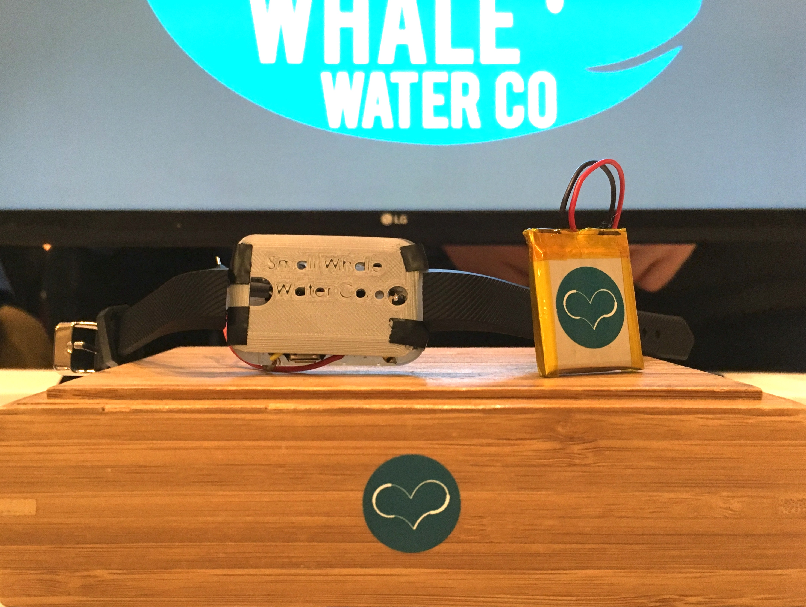
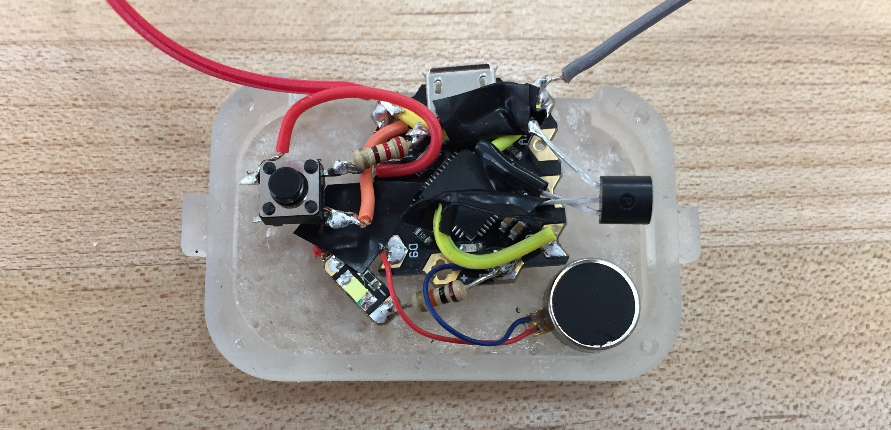
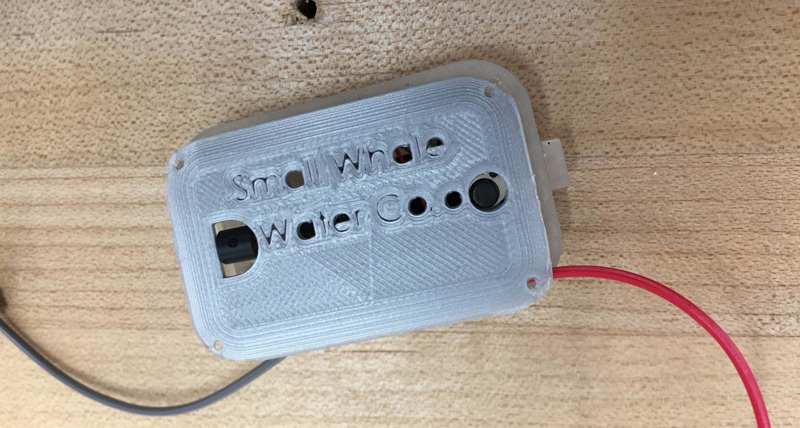
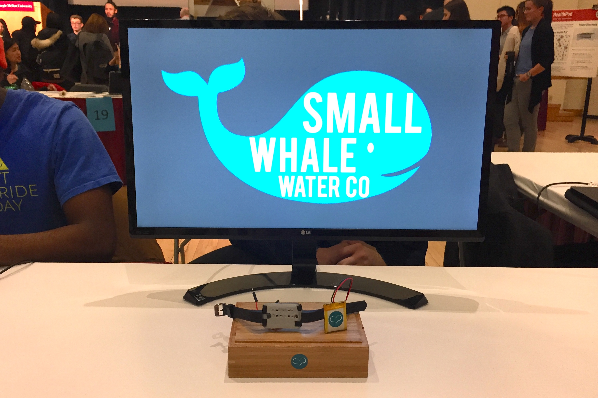
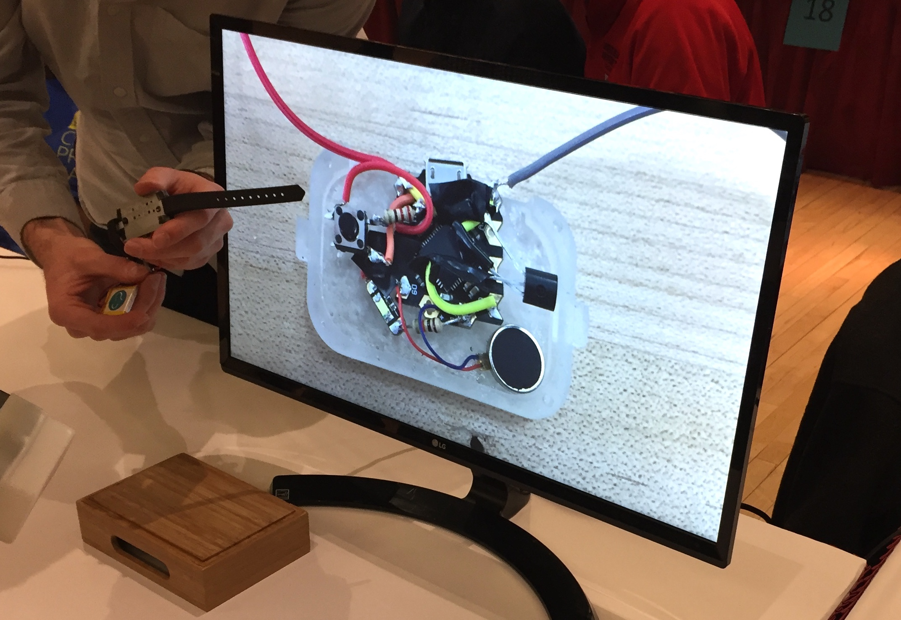
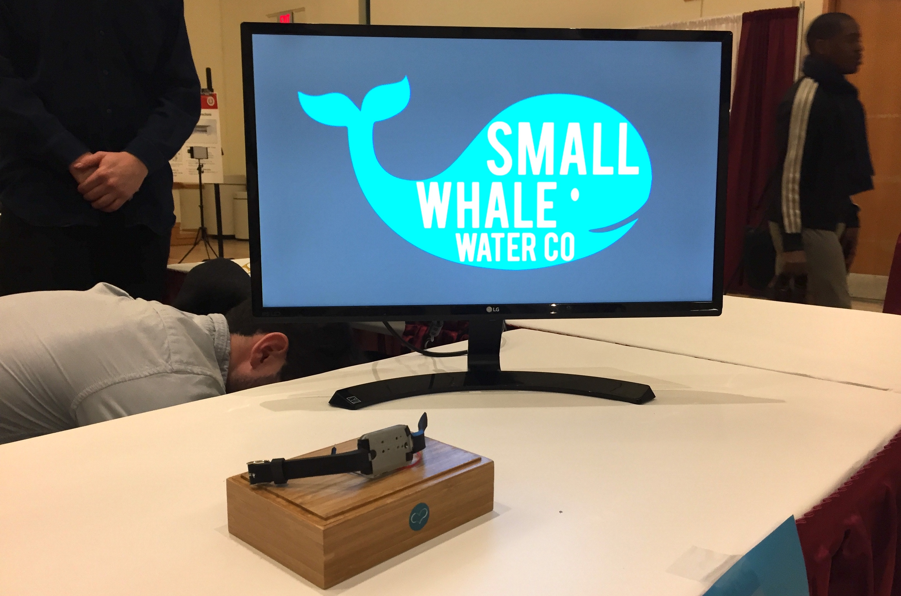

Small Whale Water Co.
Each year, Carnegie Mellon University's College of Engineering hosts a hackathon for social good, called Impactathon. This year's Impactathon focus-area was on disaster relief and emergency medical aid. On a team with two computer engineers and two other mechanical engineers, we built a prototype wearable device to ensure emergency response teams stay hydrated through their work.

As it turns out, a significant problem in disaster relief is that first responders often suffer from dehydration and end up with serious injuries. Our solution to this problem was to use a combination of relatively simple computer hardware, a tightly toleranced 3D printed enclosure, some basic human computer interaction principals, and a basic model relating temperature and weight to human water needs, to develop an ultra-cheap, ultra-durable, ultra-low profile wearable that reminds the user when to drink water.

As our computer engineers began working on software, the hardware/mechanical work was split between me and the other mechanical engineer. I was primarily responsible for the electronic hardware.
With just a few days to complete this project and limited resources, we had very few opportunities to iterate and improve on the electronic components, so we pretty much just had one shot to ensure it all fit in our enclosure and operated as desired.

While it may look like a random mess of wires, it's a very intentional mess of wires. Care had to be taken to ensure the temperature sensor and vibration motor were all sufficiently isolated from the microcontroller so as not to cause bounce in the button or cause errors in the temperature reading. In future iterations where a PCB may be used, the size of the enclosure would decrease significantly.
After printing, curing, and sanding down some sections, we were able to fit all our components in the enclosure.

With just 30 minutes until the Impactathon showcase, it was now time to run across campus and begin to set up our station.



After 4 hours of talking to people are our device, explaining our hardware, code, and methods, we were finally finished!